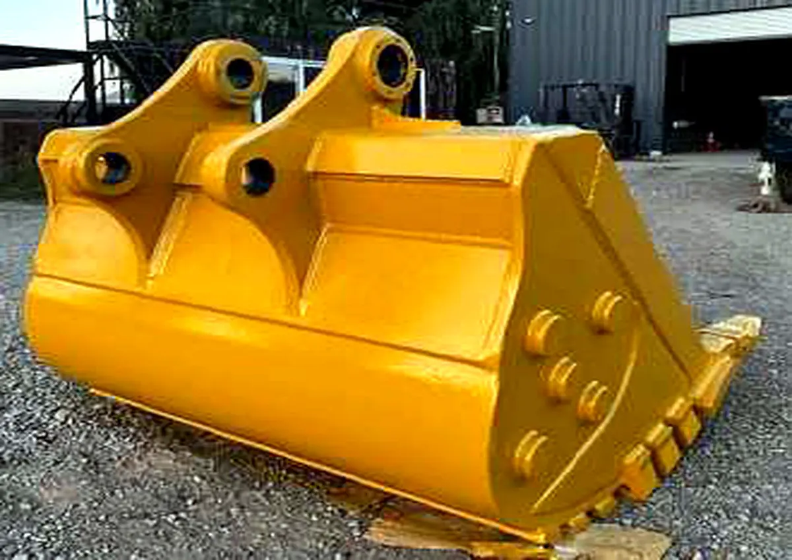
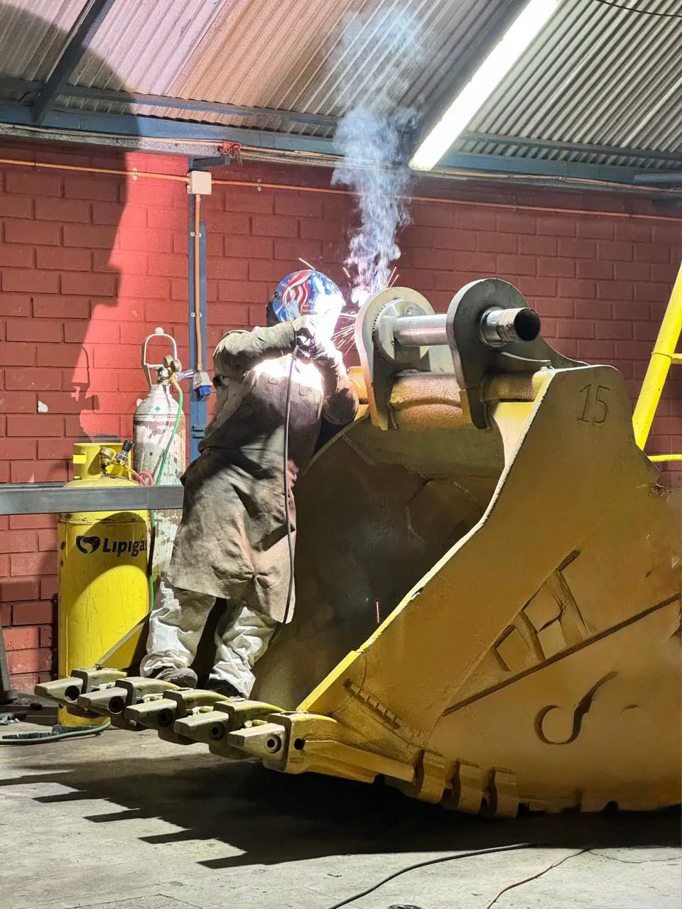
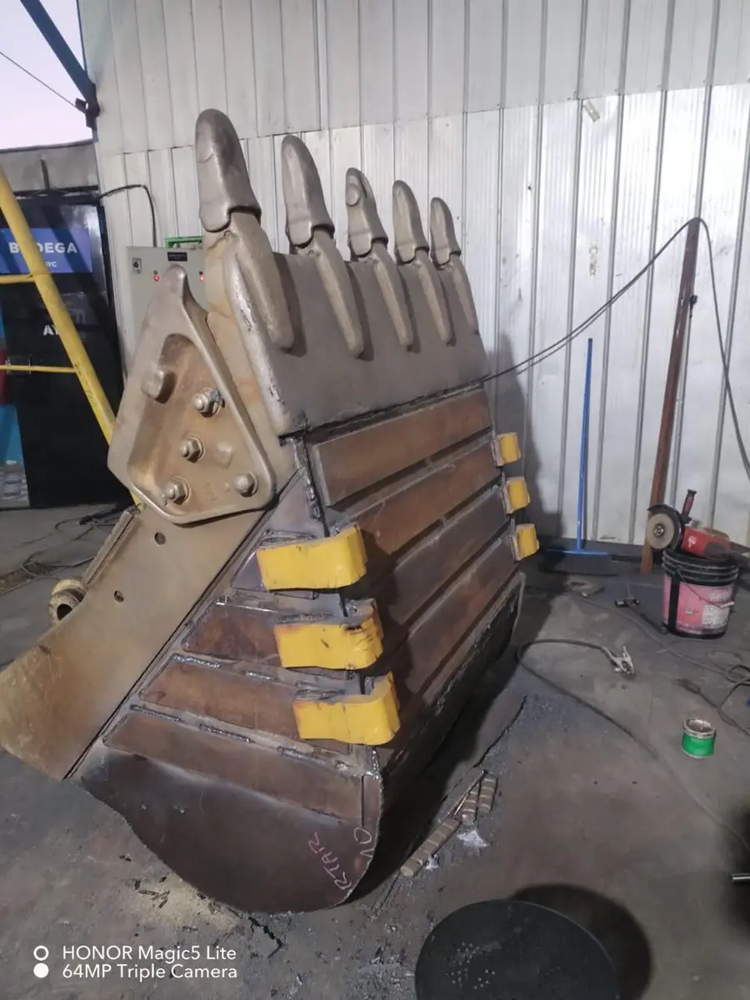
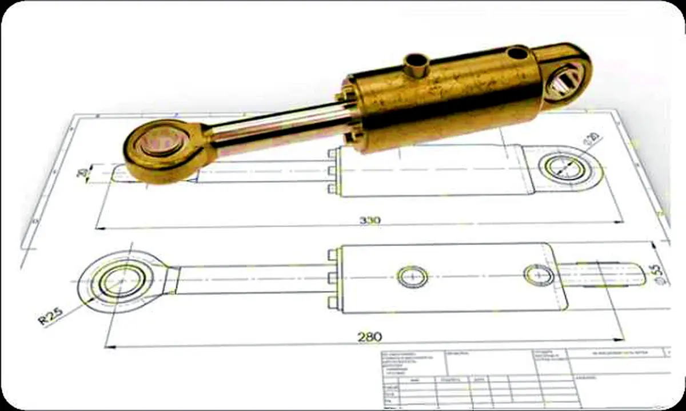
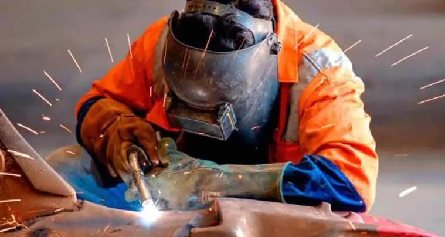
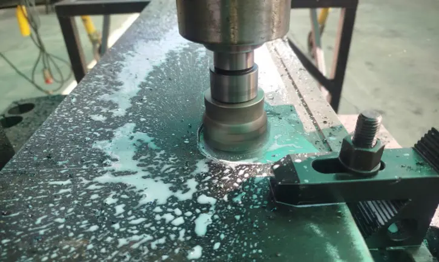
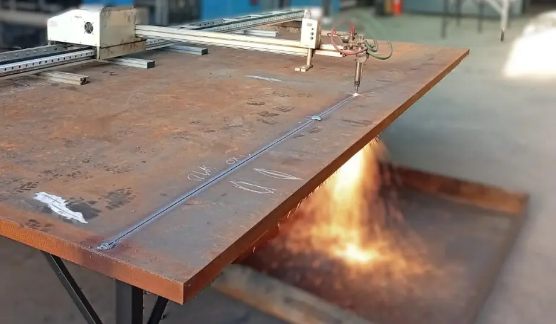
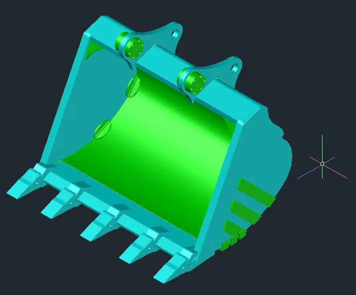
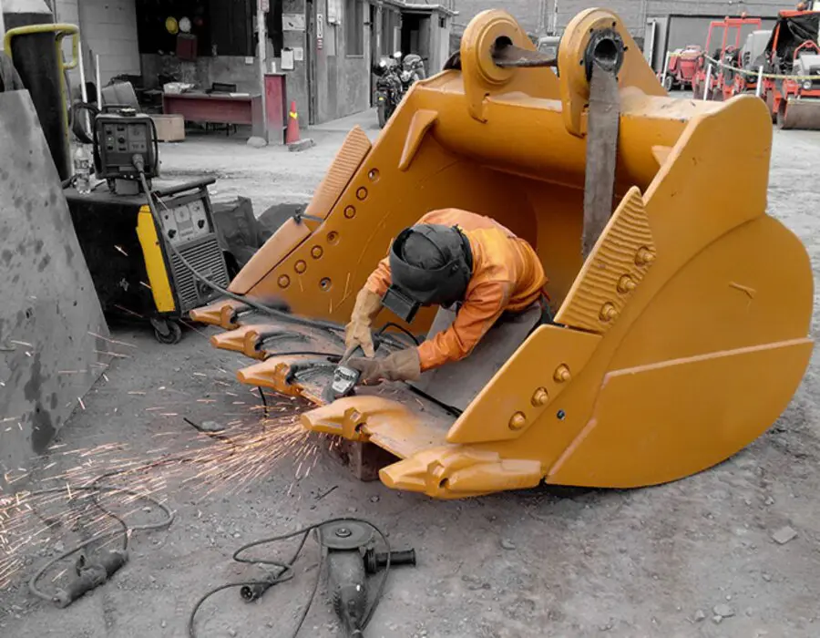

01Los Andes · Copiapó · Calama
Ingeniería, reparación y fabricación para componentes críticos.
Soluciones de maestranza para minería, construcción e industria, integrando tecnología, ingeniería y capital humano especializado.
+7Años de experiencia
3Bases operativas
360°Acompañamiento técnico

Operación crítica
Reparamos. Fabricamos. Mejoramos.
Presencia operacional
- Los Andes
- Copiapó
- Calama

CAD Ingeniería aplicada
Sobre nosotros
Capacidad orientada a operación crítica.
Transformamos requerimientos técnicos en soluciones operacionales, desde el diagnóstico inicial hasta la fabricación, el control y la entrega del componente.
Nuestra capacidad combina maestranza, reparación estructural, hidráulica, mecanizado, soldaduras especiales, corte CNC e ingeniería aplicada.
01
Diagnóstico técnico para definir el alcance real.
02
Solución a medida según condición de trabajo.
03
Seguimiento integral hasta la entrega.
Método de trabajo
Solución 360° para componentes críticos.
Un proceso simple para convertir un requerimiento técnico en una solución lista para volver a operar.
-
01
Diagnóstico
Inspección y evaluación del componente.
-
02
Ingeniería
Definición técnica y modelamiento.
-
03
Fabricación
Reparación o producción de la solución.
-
04
Control
Verificación de terminaciones y condición.
-
05
Entrega
Cierre y acompañamiento técnico.
Capacidades
Servicios principales.
Portafolio técnico para la recuperación, mejora y fabricación de piezas y componentes industriales.

02
03Procesos especializados
Soldaduras especiales

04Fabricación de piezas
Mecanizado

05Plasma y oxicorte
Corte CNC

06Diseño y seguimiento
Ingeniería y proyectos
Alta exigencia
Reparación estructural de equipos y componentes.
Soluciones a medida para componentes sometidos a desgaste, impacto y condiciones severas de operación.

Aplicaciones típicas
Baldes, bastidores, soportes, brazos y estructuras auxiliares. Recuperación, refuerzos y mejoras según condición de trabajo.
Enfoque técnico
Diseño, reparación y control con foco en durabilidad, confiabilidad y continuidad operacional.
Hidráulica
Cilindros hidráulicos: reparación, mejora y prueba.
Área enfocada en recuperación integral de cilindros hidráulicos y fabricación de soluciones asociadas.
Consultar por un cilindro ↗- 01Fabricación de sellos hidráulicos
- 02Banco automático de desarme
- 03Armado de cilindros
- 04Banco de prueba
- 05Soldadura circular CNC
- 06Bruñido CNC
Capacidad de taller
Mecanizado, soldadura y corte CNC.
Procesos complementarios para fabricación y reparación de piezas industriales.
01
Mecanizado
Tornos, taladros fresadores, taladros magnéticos y herramientas especializadas.
02
Soldaduras especiales
Arco manual · MIG/MAG · MIG aluminio · TIG · arco cromoníquel.
03
Corte CNC
Plasma CNC hasta 16 mm · Oxicorte CNC hasta 80 mm.
Del requerimiento al diseño
Ingeniería aplicada
Diseño e innovación para cada operación.
Diseñamos y modelamos soluciones para responder a condiciones específicas de cada operación, con seguimiento técnico del proyecto.
- 01 AutoCAD
- 02 SolidWorks
- 03 Modelamiento de componentes
- 04 Diseño y seguimiento de proyectos
Respaldo operativo
Experiencia vinculada a operaciones exigentes.
Trayectoria asociada a clientes de minería, construcción, montaje e industria, con soluciones pensadas para continuidad operacional.
01 Minería y holding minero
02 Contratistas y montajes
03 Servicios industriales
04 Construcción y obras especiales
Pan American Silver
ICAFAL
STI
Yamana Gold
CEMIN
Anakena Group
ICV
Fenix Gold
STRACON
Pilotes Terratest
Hablemos de tu requerimiento
¿Tienes un componente que reparar, fabricar o mejorar?
Envíanos una fotografía, plano o requerimiento técnico y lo evaluamos.
Los AndesAv. Alessandri #315, San Esteban
CopiapóAv. Henríquez #316
CalamaBarrio Industrial Apiac s/n, Local 78